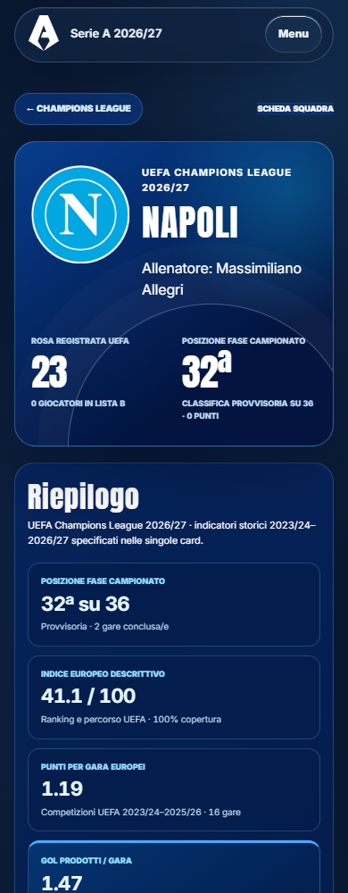
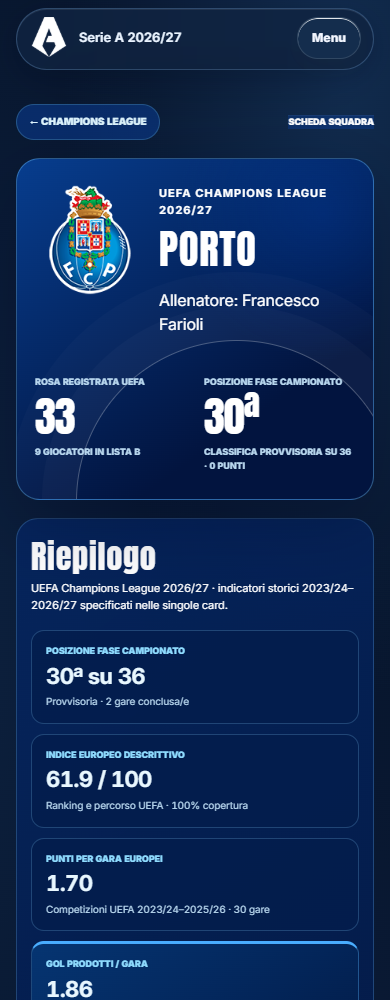
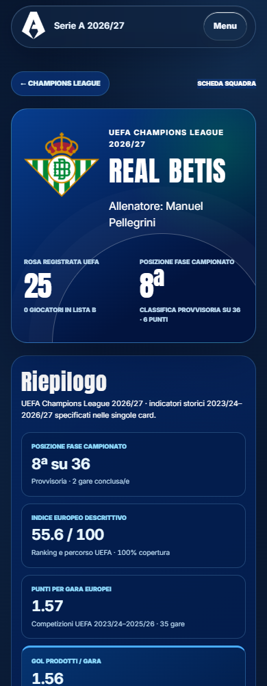
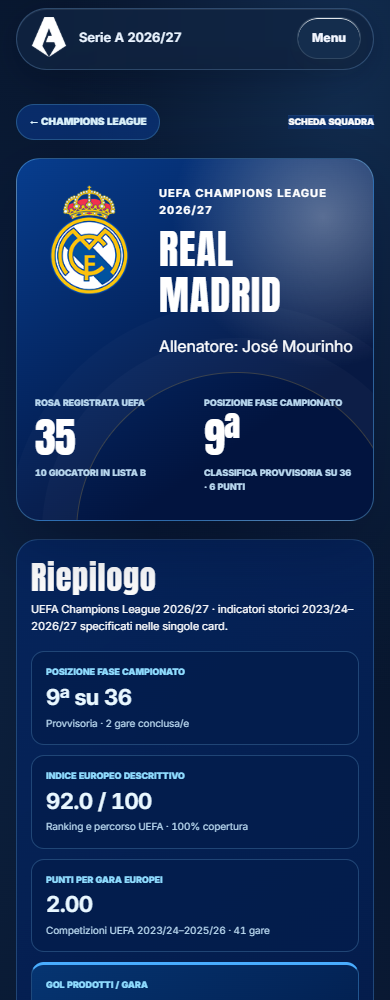
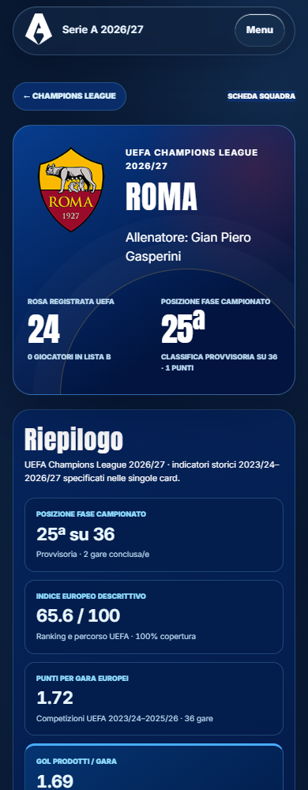

<style>body{margin:12px;background:#d7e0e8;font:15px system-ui}main{display:grid;grid-template-columns:repeat(4,1fr);gap:12px}figure{margin:0;min-width:0}figcaption{height:40px;font-weight:600}img{width:100%;height:auto;display:block}</style><main><figure><figcaption>56 · champions-league.html?team=manchester-united</figcaption></figure><figure><figcaption>57 · champions-league.html?team=napoli</figcaption></figure><figure><figcaption>58 · champions-league.html?team=paris-saint-germain</figcaption></figure><figure><figcaption>59 · champions-league.html?team=porto</figcaption></figure><figure><figcaption>60 · champions-league.html?team=psv-eindhoven</figcaption></figure><figure><figcaption>61 · champions-league.html?team=real-betis</figcaption></figure><figure><figcaption>62 · champions-league.html?team=real-madrid</figcaption></figure><figure><figcaption>63 · champions-league.html?team=roma</figcaption></figure></main>